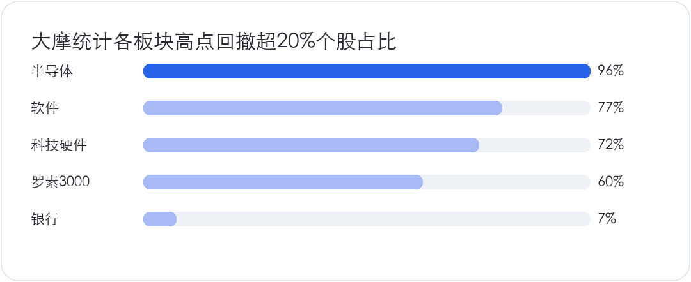
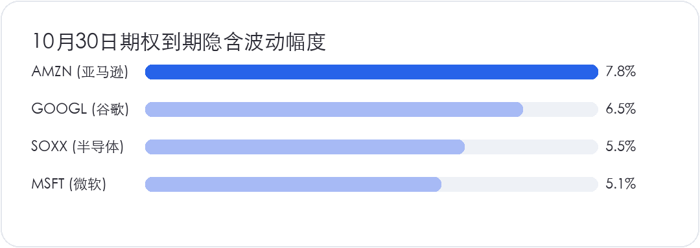

<div style="margin:0;padding:0;background:#f5f7fa;color:#2a2a34;font-size:16px;line-height:1.9;font-family:-apple-system,BlinkMacSystemFont,'SF Pro Text','PingFang SC','Hiragino Sans GB','Microsoft YaHei',Arial,sans-serif;font-variant-numeric:tabular-nums;font-feature-settings:'tnum' 1,'lnum' 1;text-align:left !important;text-align-last:left;letter-spacing:0;word-spacing:normal;white-space:normal;word-break:normal;box-sizing:border-box;"><div style="margin:0;background:#ffffff;padding:28px 22px 44px 22px;box-sizing:border-box;text-align:left !important;text-align-last:left;letter-spacing:0;word-spacing:normal;white-space:normal;word-break:normal;"><p style="display:block;width:100%;margin:0 0 12px 0;padding:0;color:#2763e9;font-size:10px;line-height:1.6;font-weight:650;letter-spacing:0.12em;text-align:center !important;text-align-last:center;word-spacing:normal;white-space:normal;word-break:normal;box-sizing:border-box;">美股 · 期权 · 资讯 · 观点</p><div style="margin:0 0 30px 0;padding:0;text-align:center !important;text-align-last:center;word-spacing:normal;white-space:normal;word-break:normal;box-sizing:border-box;"></div><div style="margin:0 0 0 0;padding:28px 0 0 0;text-align:left !important;text-align-last:left;letter-spacing:0;word-spacing:normal;white-space:normal;word-break:normal;box-sizing:border-box;"><div style="margin:0 0 12px 0;padding:0;text-align:left !important;line-height:1.2;border:0;display:flex;align-items:center;gap:10px;text-align-last:left;letter-spacing:0;word-spacing:normal;white-space:normal;word-break:normal;box-sizing:border-box;"><span style="display:inline-block;flex:0 0 auto;vertical-align:middle;color:#2763e9;font-size:12px;font-weight:850;letter-spacing:0.12em;line-height:1.2;text-transform:uppercase;border:0;box-sizing:border-box;">0 · MACRO</span><span style="display:block;flex:1 1 auto;min-width:36px;vertical-align:middle;height:1px;margin:0 0 2px 0;background:#2763e9;line-height:1px;font-size:0;border:0;box-sizing:border-box;"></span></div><p style="margin:0 0 16px 0;padding:0;color:#2a2a34;font-size:22px;line-height:1.45;font-weight:850;text-align:left !important;letter-spacing:0;text-align-last:left;word-spacing:normal;white-space:normal;word-break:normal;box-sizing:border-box;">宏观数据全线转暖，但盘面广度依然脆弱</p><p style="margin:0 0 16px 0;padding:0;color:#454550;font-size:16px;line-height:1.9;font-weight:400;text-align:left !important;letter-spacing:0;word-spacing:normal;white-space:normal;word-break:normal;text-align-last:left;box-sizing:border-box;">耐用品订单、房屋销售、房价，尤其是消费者信心指数全线超预期，直接将宏观经济意外指数推至近七个月以来的最高水平。原油价格回落带动上游通胀预期降温，超大规模数据中心信用违约互换（CDS）利差大幅收窄至一周以来的最低点。受风险偏好回暖刺激，纳斯达克指数与半导体板块连续第二个交易日反弹，快速收复上周全部跌幅。对于在前期破位处执行止损或减仓的交易者而言，两天的急速拉升确实带来心理煎熬，但多空分水岭在此处远未成定局。</p><p style="margin:0 0 16px 0;padding:0;color:#454550;font-size:16px;line-height:1.9;font-weight:400;text-align:left !important;letter-spacing:0;word-spacing:normal;white-space:normal;word-break:normal;text-align-last:left;box-sizing:border-box;">表面繁荣掩盖了极度脆弱的市场广度。标普500指数全天呈现严重的分化格局，11个大类板块中仅有5个上涨，其余6个录得下跌。资金依然高度扎堆于人工智能核心龙头，AI相关标的单日平均涨幅达5%，而剔除AI概念后的其余绝大部分板块反向回落30个基点。高盛最新的全球基本面多空敞口数据显示，机构多空敞口依然处于极低水位，且近期处于持续下行态势，并未伴随股指的反弹出现系统性抬升。这表明盘面的主导力量并非长线基本面多头资金的大举建仓，更多是空头在重要技术位遭遇回补阻击后的波段短打。缺乏基本面共识的短线流动性，极易使盘面陷入高波动与频繁假突破，趋势交易者切不可仅凭两根阳线就盲目判定调整已然翻篇。</p></div><div style="margin:30px 0 0 0;padding:28px 0 0 0;text-align:left !important;text-align-last:left;letter-spacing:0;word-spacing:normal;white-space:normal;word-break:normal;box-sizing:border-box;"><div style="margin:0 0 12px 0;padding:0;text-align:left !important;line-height:1.2;border:0;display:flex;align-items:center;gap:10px;text-align-last:left;letter-spacing:0;word-spacing:normal;white-space:normal;word-break:normal;box-sizing:border-box;"><span style="display:inline-block;flex:0 0 auto;vertical-align:middle;color:#2763e9;font-size:12px;font-weight:850;letter-spacing:0.12em;line-height:1.2;text-transform:uppercase;border:0;box-sizing:border-box;">1 · EARNINGS</span><span style="display:block;flex:1 1 auto;min-width:36px;vertical-align:middle;height:1px;margin:0 0 2px 0;background:#2763e9;line-height:1px;font-size:0;border:0;box-sizing:border-box;"></span></div><p style="margin:0 0 16px 0;padding:0;color:#2a2a34;font-size:22px;line-height:1.45;font-weight:850;text-align:left !important;letter-spacing:0;text-align-last:left;word-spacing:normal;white-space:normal;word-break:normal;box-sizing:border-box;">波音爆雷拖累工业，前瞻指引下调重挫多头</p><p style="margin:0 0 16px 0;padding:0;color:#454550;font-size:16px;line-height:1.9;font-weight:400;text-align:left !important;letter-spacing:0;word-spacing:normal;white-space:normal;word-break:normal;text-align-last:left;box-sizing:border-box;">在大盘指数看似强劲的反弹表象之下，个股基本面的分化与风险正在集中出清。工业巨头波音（<strong style="color:#2a2a34;font-weight:700;box-sizing:border-box;">BA</strong>）公布第三季度财报，尽管经营现金流与总体营收好于此前较为悲观的预期，但其管理层发布的前瞻预警彻底击溃了买盘信心。财报数据显示，波音核心每股收益亏损达到0.34美元，显著高于市场预期的每股亏损0.21美元；虽然营收同比增长4%至240亿美元，但恢复可持续生产节拍仍需耗费更多时间，不得不大幅削减后续商用飞机的交付计划。波音当前预计无法实现全年交付500架737飞机的生产目标，同时波音787梦想客机的全年交付量也将被压低至90架的指引下限。</p><p style="margin:0 0 16px 0;padding:0;color:#454550;font-size:16px;line-height:1.9;font-weight:400;text-align:left !important;letter-spacing:0;word-spacing:normal;white-space:normal;word-break:normal;text-align-last:left;box-sizing:border-box;">交付目标的落空不仅重创了未来自由现金流的预期折现，也让整个制造供应链承受估值重构。波音股价当天在现货市场跳空低开，盘中跌幅一度达到10%，日线与周线均录得极为沉重的大阴线，彻底失守200日均线。从技术防线来看，当前试价正处于164美元至178美元的核心支撑区间，这里是今年4月阶段性底部构建的重要筹码聚集区；倘若这一防线在空头惯性下被有效击穿，下方149美元至159美元区间将是空头进一步加速宣泄的目标。鉴于波音今明两年的盈利预期已再度被大幅调低，估值重估尚未完全体现在股价中，左侧盲目博反弹面临极高的结构性下行风险。除波音外，半导体个股盘后亦有前瞻指引不及预期导致重挫7%的个例，但在215美元至233美元密集支撑带获得承接，说明个股在关键财报节点的多空博弈正变得异常敏感。</p></div><div style="margin:30px 0 0 0;padding:28px 0 0 0;text-align:left !important;text-align-last:left;letter-spacing:0;word-spacing:normal;white-space:normal;word-break:normal;box-sizing:border-box;"><div style="margin:0 0 12px 0;padding:0;text-align:left !important;line-height:1.2;border:0;display:flex;align-items:center;gap:10px;text-align-last:left;letter-spacing:0;word-spacing:normal;white-space:normal;word-break:normal;box-sizing:border-box;"><span style="display:inline-block;flex:0 0 auto;vertical-align:middle;color:#2763e9;font-size:12px;font-weight:850;letter-spacing:0.12em;line-height:1.2;text-transform:uppercase;border:0;box-sizing:border-box;">2 · FOCUS</span><span style="display:block;flex:1 1 auto;min-width:36px;vertical-align:middle;height:1px;margin:0 0 2px 0;background:#2763e9;line-height:1px;font-size:0;border:0;box-sizing:border-box;"></span></div><p style="margin:0 0 16px 0;padding:0;color:#2a2a34;font-size:22px;line-height:1.45;font-weight:850;text-align:left !important;letter-spacing:0;text-align-last:left;word-spacing:normal;white-space:normal;word-break:normal;box-sizing:border-box;">大摩揭示惨烈调整，三场清算后方迎8000点</p><p style="margin:0 0 16px 0;padding:0;color:#454550;font-size:16px;line-height:1.9;font-weight:400;text-align:left !important;letter-spacing:0;word-spacing:normal;white-space:normal;word-break:normal;text-align-last:left;box-sizing:border-box;">摩根士丹利首席美股策略师 Michael Wilson 在最新研报中，通过详实的历史与微观数据揭开了这轮行情残酷的内在真相。根据大摩的统计，在广度覆盖更宽的罗素3000指数成分股中，已有近60%的股票相较6月1日以来的高点下跌超过20%，超过三分之一的个股深度回撤超30%，八分之一的股票股价惨遭腰斩。6月1日正是此轮经济周期中分析师盈利预期修正幅度触顶的关键转折点。细分板块的数据更为触目惊心：半导体产业链中96%的芯片股自阶段高点跌超20%，87%跌超30%，高达42%的个股股价直接腰斩；软件板块有77%的个股跌超20%，科技硬件亦有72%的股票跌幅超过两成。</p><p style="margin:4px 0 16px 0;padding:0;text-align:center !important;text-align-last:center;word-spacing:normal;white-space:normal;word-break:normal;box-sizing:border-box;"></p><p style="margin:0 0 16px 0;padding:0;color:#454550;font-size:16px;line-height:1.9;font-weight:400;text-align:left !important;letter-spacing:0;word-spacing:normal;white-space:normal;word-break:normal;text-align-last:left;box-sizing:border-box;">这一组数据充分说明，指数维持在高位主要依托极少数巨头维持市值，绝大部分个股早已经历了完整的熊市杀跌。在此背景下，大摩提出了当前市场的好消息与坏消息。好消息在于，从大周期来看，自6月开启的去杠杆与估值挤压已进入尾声阶段，历史统计数据显示，每年的10月27日往往是四季度波动周期与中期选举季节性低点汇聚的技术变盘窗口。坏消息则是，市场在迎来真正的大反弹之前，前方仍需经历三次清算事件的冲击。这一过渡期的结束往往以大盘指数向下补跌、与个股低迷的市场广度取得平衡为标志。</p><p style="margin:0 0 16px 0;padding:0;color:#454550;font-size:16px;line-height:1.9;font-weight:400;text-align:left !important;letter-spacing:0;word-spacing:normal;white-space:normal;word-break:normal;text-align-last:left;box-sizing:border-box;">大摩给出的战术下行目标指向7100点至7200点区间，这意味着大盘需在当前位置向下略微跌破200日均线，通过最后的指数级杀跌完成筹码与广度的出清。但由于核心资产的质量因子依然保持稳定，一旦杀跌完成，市场将迎来极其强劲的反转修复。大摩维持对标普500指数年底达到8000点的基准目标不变，并给出了未来12个月8300点的长期展望。这种先蹲后跳的路径推演，清晰提示了短期路途的颠簸与最终反弹空间的巨大反差。</p></div><div style="margin:30px 0 0 0;padding:28px 0 0 0;text-align:left !important;text-align-last:left;letter-spacing:0;word-spacing:normal;white-space:normal;word-break:normal;box-sizing:border-box;"><div style="margin:0 0 12px 0;padding:0;text-align:left !important;line-height:1.2;border:0;display:flex;align-items:center;gap:10px;text-align-last:left;letter-spacing:0;word-spacing:normal;white-space:normal;word-break:normal;box-sizing:border-box;"><span style="display:inline-block;flex:0 0 auto;vertical-align:middle;color:#2763e9;font-size:12px;font-weight:850;letter-spacing:0.12em;line-height:1.2;text-transform:uppercase;border:0;box-sizing:border-box;">3 · EARNINGS</span><span style="display:block;flex:1 1 auto;min-width:36px;vertical-align:middle;height:1px;margin:0 0 2px 0;background:#2763e9;line-height:1px;font-size:0;border:0;box-sizing:border-box;"></span></div><p style="margin:0 0 16px 0;padding:0;color:#2a2a34;font-size:22px;line-height:1.45;font-weight:850;text-align:left !important;letter-spacing:0;text-align-last:left;word-spacing:normal;white-space:normal;word-break:normal;box-sizing:border-box;">期权定价锁定变盘，科技财报迎来多空生死战</p><p style="margin:0 0 16px 0;padding:0;color:#454550;font-size:16px;line-height:1.9;font-weight:400;text-align:left !important;letter-spacing:0;word-spacing:normal;white-space:normal;word-break:normal;text-align-last:left;box-sizing:border-box;">多空博弈的决战时刻正快速逼近。费城半导体 ETF <strong style="color:#2a2a34;font-weight:700;box-sizing:border-box;">SOXX</strong> 连续两日反弹并在200日均线附近构筑了三日止跌K线组合，但技术面底部的确立必须经受衍生品市场的严格计价。截至本周五（10月30日）到期的期权平价跨式期权隐含波动显示，<strong style="color:#2a2a34;font-weight:700;box-sizing:border-box;">SOXX</strong> 当前定价中枢在511美元，上下浮动28美元的区间对应着68%的正态分布概率。在当前仅剩三个交易日的窗口内，这一波动区间对应着高达正负5.5%的单边振幅。如果多头借势将价格推升至538美元上方，则不仅能成功突破536美元的技术阻力位，还将彻底扭转下行通道确立右侧反转；反之，若空头将价格重新砸穿483美元，则意味着过去两天的反弹被全数吞没，价格将回踩前期跳空起涨点并打开深度破位空间。</p><p style="margin:4px 0 16px 0;padding:0;text-align:center !important;text-align-last:center;word-spacing:normal;white-space:normal;word-break:normal;box-sizing:border-box;"></p><p style="margin:0 0 16px 0;padding:0;color:#454550;font-size:16px;line-height:1.9;font-weight:400;text-align:left !important;letter-spacing:0;word-spacing:normal;white-space:normal;word-break:normal;text-align-last:left;box-sizing:border-box;">驱动这一波动落地的核心催化剂来自外部变量的集中交汇。首先是美联储为期两天的议息会议即将于周三公布决议，虽然当前市场计入的加息概率极低，但美联储关于后续降息路径、通胀粘性与流动性环境的定调将直接决定折现率定价。其次是三大核心科技巨头财报的密集轰炸，期权市场同样给出了极高的波动预算：微软（<strong style="color:#2a2a34;font-weight:700;box-sizing:border-box;">MSFT</strong>）期权平价跨式定价为530美元上下27美元（波动幅度约5%），下探至503美元仍位于490美元核心支撑上方，向上突破557美元则直接刷新551美元的历史极值，结构防御性最强；谷歌（<strong style="color:#2a2a34;font-weight:700;box-sizing:border-box;">GOOGL</strong>）期权定价在315美元上下20美元（波动幅度约6.5%），向上脱离危险区看向335美元，向下需警惕跌破298美元关键支撑后引发的技术性抛压回撤；亚马逊（<strong style="color:#2a2a34;font-weight:700;box-sizing:border-box;">AMZN</strong>）期权定价255美元上下20美元（波动幅度近8%），向上突破265美元前高后目标直指275美元，向下235美元具备极强的买盘缓冲。</p><p style="margin:0 0 16px 0;padding:0;color:#454550;font-size:16px;line-height:1.9;font-weight:400;text-align:left !important;letter-spacing:0;word-spacing:normal;white-space:normal;word-break:normal;text-align-last:left;box-sizing:border-box;">除业绩数字外，科技巨头在庞大资本支出背后的筹资路径同样至关重要——选择发债融资将对脆弱的债券市场施加收益率上行压力，而选择股权稀释则会对每股内在价值带来现实考量。交易层面上，如博通（<strong style="color:#2a2a34;font-weight:700;box-sizing:border-box;">AVGO</strong>）跳涨至325美元上方，正确的交易逻辑是趋势破位果断止损防范永久性损失，一旦反转信号确立则毫不犹豫在右侧买回。依托客观交易系统进行小幅度试错，严禁在缺乏基本面支撑的高弹性冷门题材上盲目死扛，方能在这场多空决战中守住本金。</p></div><div style="margin:34px 0 0 0;padding:0;border:1px solid #e4e7ed;border-radius:24px;background:#fafbfc;text-align:center !important;box-sizing:border-box;overflow:hidden;text-align-last:center;word-spacing:normal;white-space:normal;word-break:normal;"><p style="margin:0;padding:18px 16px;color:#6a6a78;font-size:14px;line-height:1.8;text-align:center !important;background:#fafbfc;box-sizing:border-box;text-align-last:center;word-spacing:normal;white-space:normal;word-break:normal;"><a href="https://mp.weixin.qq.com/mp/profile_ext?action=home&amp;__biz=Mzg2MzY4OTI5MQ==#wechat_redirect" style="color:#6a6a78;text-decoration:underline;text-underline-offset:3px;box-sizing:border-box;">长按识别二维码关注公众号，持续获取每日美股资讯与观点。</a></p><p style="margin:0;text-align:center !important;background:#ffffff;box-sizing:border-box;text-align-last:center;word-spacing:normal;white-space:normal;word-break:normal;"></p></div><p style="margin:28px 0 0 0;padding:22px 0 0 0;color:#9a9aa8;font-size:12px;line-height:1.8;text-align:center !important;text-align-last:center;word-spacing:normal;white-space:normal;word-break:normal;box-sizing:border-box;">免责声明：本文仅为个人市场观察和交易复盘，不构成任何投资建议；市场有风险，交易需谨慎。点击阅读原文可跳转博客。</p></div></div>
